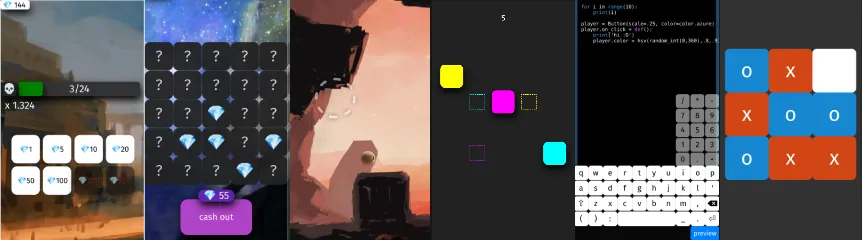

Taptapir
Download Documentation GitHub <3
Make 2D Mobile Games
An ursina-inspired 2d framework for the web/mobile.

Powered by sunsnake
sunsnake
Sunsnake is a Python inspired language for the web. • Transpiles into JavaScript. • Indentation Significant, no more {}-brackets :)
Sunsnake is a Python inspired language for the web. • Transpiles into JavaScript. • Indentation Significant, no more {}-brackets :)
Made with Taptapir
Gem Hunt
Tic Tac Toe
CMYK Swap
Dustred
Dreamland Sketcher
Ursina
https://www.ursinaengine.org/
A fully featured 2d and 3d game engine with a straight-forward API, making it
easy to develop games and applications. Includes features such
as reloading of 3d models, textures, shaders and code, all while in-game.
Modern UI library written from scratch, procedural models, animation and tweening,
lots of shaders for effects such as triplanar mapping, texture blending,
stencil projection, matcap, lighting and more.